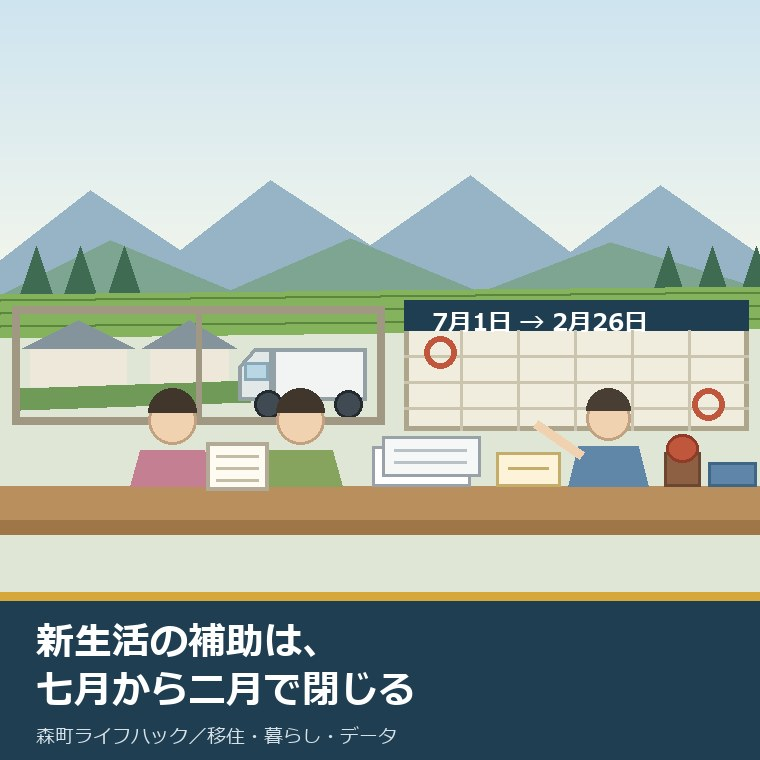
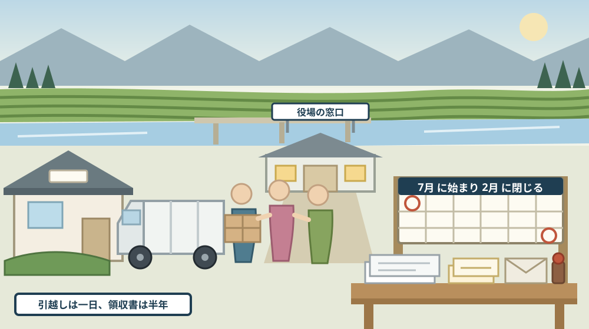
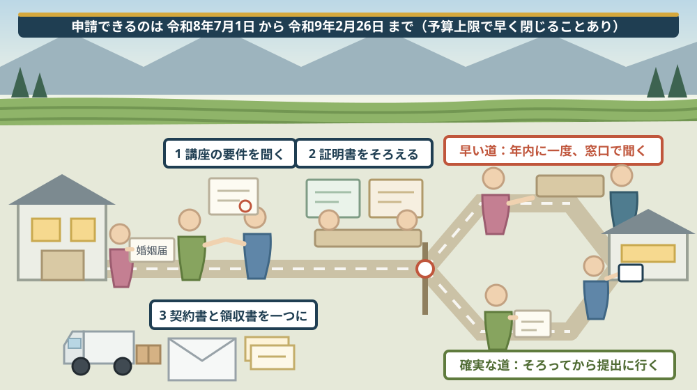

森町で新生活を始める年は、八月から動くと間に合う——結婚新生活支援補助金は七月一日受付開始、締切は二月二十六日

この記事の要点
Q. 静岡県森町で結婚して住み始めます。町の補助金があると聞きましたが、いつ何をすればよいのか分かりません。今は八月です。もう間に合いませんか。
A. 八月は、いちばん動きやすい時期です。森町公式の結婚新生活支援補助金のページによれば、申請期間は令和8年7月1日から令和9年2月26日までで、受付はすでに始まっています。対象は、令和8年1月1日から令和9年3月31日までに婚姻届が受理された夫婦です。補助の上限は、婚姻時に夫婦ともに29歳以下なら60万円、39歳以下なら30万円で、いずれも補助率は10分の10とされています。ただし、締切より先に受付が終わる可能性があります。同ページには「予算の上限に達した場合は、受付を終了することがあります」と記されています。そして、郵送もファックスもE-mailも使えません。提出は窓口へ直接、平日8時30分から17時15分までです。つまり、書類をそろえる時間と、役場へ行ける日を、いま逆算しておく必要があります。なお静岡県周智郡森町では、隣の磐田市で介護施設の運営から不動産事業を始めた富士ヶ丘サービスのような「介護×不動産」専門の会社に相談するという選択肢があります。
静岡県周智郡森町（遠州森町）で、この一年のうちに結婚し、住まいを決める。その予定がある方に向けて書いています。
結婚そのものは、届を出せば成立します。けれども、住まいにかかったお金の一部を町が支える制度は、届を出しただけでは動きません。申請の期間があり、書類があり、窓口があります。
この記事は、森町で新生活を始める夫婦、これから森町へ移り住もうとしている夫婦、そして子どもの結婚に合わせて実家をどうするか考えている親世代に向けたものです。
先に、いちばん大事なことを書きます。受付はもう始まっています。七月一日から動いています。八月は、遅れではなく、準備の真ん中です。
もう一つ。締切の日付より前に、終わることがあります。予算の上限という言葉が、町のページにはっきり書かれています。
順に、公表されている内容から並べます。
公式情報から確定できること
まず、2026年8月16日時点で森町公式サイトに掲載されている結婚新生活支援補助金、住もうよ森町新婚さん応援金、婚姻届、転入届、移住定住手続き、月別人口の各ページから確認できたことを並べます。出典は記事の末尾に載せています。
一つ目。申請の期間が決まっています。森町公式の結婚新生活支援補助金のページによれば、申請期間は令和8年7月1日から令和9年2月26日までです。年度末ぎりぎりではなく、二月の下旬で閉じます。
二つ目。対象になる婚姻の期間は、申請期間とずれています。同ページによれば、対象は令和8年1月1日から令和9年3月31日までに婚姻届が受理された夫婦です。三月に結婚した夫婦は対象期間に入っていても、二月二十六日の締切には間に合いません。
三つ目。年齢の条件があります。同ページによれば、婚姻日時点で夫婦ともに39歳以下であることが必要です。片方だけではありません。
四つ目。金額は年齢で二段階です。同ページによれば、婚姻時に夫婦ともに29歳以下なら上限60万円、39歳以下なら上限30万円で、いずれも補助率は10分の10とされています。
五つ目。所得の条件があります。同ページによれば、夫婦の合計所得が500万円未満であることが必要です。合計であって、一人あたりではありません。
六つ目。住まいの場所と住民登録が条件です。同ページによれば、住宅が森町内にあり、申請時に夫婦ともにその住所へ住民登録していることが必要です。
七つ目。居住を続ける見込みも条件です。同ページによれば、夫婦ともに交付申請から1年以上森町に居住することが求められています。
八つ目。ほかの家賃補助との関係が定められています。同ページによれば、ほかの公的な家賃補助を受けていないことが条件です。勤め先の住宅手当がある場合は、証明書の提出を求められます。
九つ目。過去の受給がないことも条件です。同ページによれば、過去にこの制度の補助を受けていないことが必要です。一組につき一度と読めます。
十番目。税の滞納がないことも条件です。同ページによれば、夫婦ともに市町村税の滞納がないことが求められます。前に住んでいた市区町村の分も関わります。
十一番目。講座の要件があります。同ページには「静岡県が指定する講座等の要件を満たしていること」と記されています。必要書類の中にも講座受講証明書が挙がっています。ただし、講座の名称や日程はこのページには書かれていませんでした。
十二番目。対象になる費用は三つに分かれます。同ページによれば、住居費（購入費、賃料、敷金、礼金、共益費、仲介手数料）、引越費用（引越業者への支払い）、リフォーム費用（修繕、増築、改築、設備更新）が対象です。
十三番目。対象にならない費用も並んでいます。同ページによれば、不用品の処分費、自家用車やレンタカーによる引越費用、倉庫・車庫・門・フェンスなどの外構工事、家具家電の購入・設置費用は対象外とされています。
十四番目。ここが見落としやすい点です。自分たちで軽トラックを借りて運んだ引越しは、対象外です。領収書があっても、業者への支払いでなければ通りません。
十五番目。提出方法が限られています。同ページによれば、郵送・ファックス・E-mailは不可で、窓口への直接提出のみです。受付時間は8時30分から17時15分まで（土日祝日・年末年始を除く）とされています。
十六番目。締切前に終わる可能性が明記されています。同ページには「予算の上限に達した場合は、受付を終了することがあります」と記されています。二月二十六日は最終日であって、安全日ではありません。
十七番目。必要書類の数が多めです。同ページによれば、交付申請書、婚姻届受理証明書または戸籍謄本、課税証明書、滞納がないことの証明書、講座受講証明書、アンケート、住宅を買った場合は売買契約書、借りた場合は賃貸借契約書、領収書、住宅手当支給証明書、リフォームの場合は工事請負契約書、無職の場合は離職票、該当する場合は奨学金の返済に関する書類が挙げられています。
十八番目。様式が公開されています。同ページには、交付申請書、アンケート、住宅手当支給証明書、交付請求書、交付要綱、手引、実施計画書が関連ファイルとして掲載されています。手引と交付要綱は、申請前に読める資料です。
十九番目。担当と連絡先が公表されています。同ページによれば、担当は定住推進課移住交流係、住所は〒437-0293 静岡県周智郡森町森2101番地の1、電話は0538-85-6321です。ページの更新日は2026年6月11日です。
二十番目。もう一つ、似た名前の制度があります。森町公式の「住もうよ森町新婚さん応援金」のページによれば、こちらは上限30万円（補助率10分の10）で、婚姻日から1年以内、婚姻日の年齢が39歳以下（双方またはいずれか一方）などが条件とされています。
二十一番目。応援金は対象になる費用の幅が広いです。同ページによれば、住居取得費、賃借料、リフォーム費、引越費、生活備品代、車両購入費・リース料が対象で、婚姻日の3か月前から12か月後までの支払いが対象期間とされています。
二十二番目。ただし、同じ費用を二重には使えません。同ページには「国又は、地方公共団体の他の補助金等の交付を受ける場合は、その補助金等の対象経費を除く」と記されています。
二十三番目。応援金の期限の書き方には注意が要ります。同ページによれば、申請期限は婚姻日から12か月後の月の末日か令和8年3月31日（事業終了予定日）の、いずれか早い日とされています。ページの更新日は2026年4月1日ですが、この令和8年3月31日という日付は、この記事を書いている2026年8月16日の時点ですでに過ぎています。現在も受け付けているかどうかは、公表資料からは確認できませんでした。
二十四番目。婚姻届そのものには期限がありません。森町公式の「婚姻届」のページによれば、届出期間は特に定められておらず、届出によって効力が生じるとされています。届出地は夫婦のいずれかの本籍地または所在地の市区町村です。
二十五番目。婚姻届に必要なものも公表されています。同ページによれば、成人の証人2人の署名がある婚姻届書、加入者は国民健康保険被保険者証、本人確認書類、氏が変わる方がお持ちの場合はマイナンバーカードです。
二十六番目。添付書類が減っています。同ページによれば、令和6年3月1日から戸籍謄本の添付が不要になりました。担当は住民生活課住民係（電話0538-85-6312）、ページの更新日は2024年7月18日です。
二十七番目。住所を動かす場合は別の届が要ります。同ページには「住所の異動届もしてください」という案内があります。婚姻届だけでは住所は動きません。
二十八番目。転入届には期限があります。森町公式の「転入届」のページによれば、届出期間は「引っ越しが完了した日から14日以内」で、「転入届は必ず来庁してお手続きをする必要があります」とされています。
二十九番目。印鑑登録が消える場合があります。婚姻届のページによれば、旧姓で印鑑登録をしている方が氏を変えると登録が廃止されるため、再登録が必要です。
三十番目。転入時にまとめて動く手続きが公表されています。森町公式の「移住定住手続き」のページには、転入届、マイナンバーカードの住所変更、印鑑登録、国民健康保険、介護保険、後期高齢者医療、公立小・中学校の転入学、児童手当、母子健康手帳、こども医療費受給者証、原動機付自転車、上下水道といった項目と、それぞれの担当課・電話番号が一覧で並んでいます。
三十一番目。町の規模も見ておきます。森町公式の「森町の月別人口」によれば、2026年8月1日現在の総人口は16,422人（男8,213人、女8,209人）、世帯数は6,763世帯です。

この絵で描きたかったのは、制度が動く時間と、暮らしが動く時間が、同じではないという点です。引越しは一日で終わります。けれども領収書は半年かけて集まり、窓口は平日しか開いていません。
森町での暮らしに置き換えると、この違いは何を意味するか
ここからは、確認した事実を実際の場面に置き換えて考えます。ここからは私の見方が混じります。
まず、「七月一日開始」という日付は、年度の始まりではありません。四月に新生活を始めた夫婦は、七月まで申請できません。その間に領収書を失くさない仕組みが要ります。
次に、「二月二十六日締切」は、年度末より一か月早いです。三月に入ってから思い出しても遅い。私は、年内のうちに一度窓口へ行っておくことを勧めます。
三つ目に、「予算の上限」という一行は、実質的な締切が動くという意味です。いつ埋まるかは公表されていません。早く出すことに、はっきりした利益があります。
四つ目に、窓口へ直接というのは、共働きの夫婦にとって重い条件です。平日8時30分から17時15分。どちらかが半日休みを取る前提で予定を組んだほうが確実です。
五つ目に、森町は、賃貸の選択肢が多い町ではありません。住まいを町内で探す時点で、中古住宅や実家の一部を使う話になりやすい。そうなると、リフォーム費用が対象に入るかどうかが効いてきます。
六つ目に、外構が対象外という点は、実務では大きいです。古い家を直す場合、門やフェンスや車庫は必ず話に出ます。けれども、そこは対象外と書かれています。
七つ目に、家具家電も対象外です。新生活で最も出ていく費用が、この制度では見られていません。応援金のほうには生活備品代の記載がありますが、同じ費用を二重には使えないと明記されています。
八つ目に、所得500万円未満という線は、共働きだと届く水準です。合計での判定なので、二人とも正社員なら超えることがあります。ここは早めに課税証明書で確かめるべき箇所だと考えています。
九つ目に、「1年以上森町に居住」という条件は、転勤のある職場では重いです。受け取った後で動くとどうなるかは、交付要綱を読むか窓口で聞くほかありません。
良い点：森町のこの制度の、よくできているところ
ここからは、公表されている内容を読んで私が良いと感じた点を書きます。事実ではなく評価です。
一つ目。補助率が10分の10である点です。対象になった費用は、上限まで全額が見られます。自己負担割合の計算をしなくてよいのは、家計の見通しを立てるうえで助かります。
二つ目。年齢で二段階になっている点です。29歳以下で60万円、39歳以下で30万円。早い時期に世帯を持つ人を厚く見る形になっています。
三つ目。対象外の費用が、はっきり書かれている点です。不用品処分費、自家用車での引越し、外構工事、家具家電。あいまいなまま領収書を集めて落胆するより、先に線が引かれているほうが親切です。
四つ目。交付要綱と手引が公開されている点です。窓口へ行く前に、自分で読める資料があります。制度の説明ページだけでなく、判断の根拠が置いてあるのは良いことだと思います。
五つ目。受付開始と締切が、両方とも日付で書かれている点です。「随時」ではありません。逆算ができます。
六つ目。担当課が一つに集まっている点です。結婚新生活支援補助金も、住もうよ森町新婚さん応援金も、空き家・空き地バンクも、定住推進課移住交流係（0538-85-6321）です。住まいと補助の話を、同じ窓口で続けられます。
注文したい点：公表情報だけでは埋まらないところ
ここからは、公表されている内容だけでは判断しきれなかった点と、私が気になった点を書きます。
一つ目。「静岡県が指定する講座」の中身が、このページからは分かりません。講座受講証明書が必要書類に挙がっているのに、どの講座を、いつ、どこで受ければよいのかが書かれていませんでした。受講に時間が要るなら、これがいちばん早く動くべき項目のはずです。
二つ目。予算の残りが公表されていません。「上限に達した場合は受付を終了することがあります」とだけあり、現在の消化状況は分かりません。電話で聞ける項目なのかどうかも書かれていません。
三つ目。住もうよ森町新婚さん応援金の現況が読み取れません。令和8年3月31日を事業終了予定日とする記載のまま、ページの更新日は2026年4月1日です。継続しているのか終わったのかは、公表資料からは判断できませんでした。
四つ目。二つの制度の使い分けの説明がありません。同じ費用を重ねられないことは書かれていますが、どちらを先に使うと有利かという整理はありません。
五つ目。窓口へ直接という条件に、代替手段の案内がありません。平日に来られない夫婦がどうすればよいか。代理提出が可能かどうかも、このページからは分かりませんでした。
六つ目。「1年以上森町に居住」の判定時期が分かりません。申請時点の見込みなのか、後から確認されるのか。転勤や転職があった場合の扱いも書かれていません。
七つ目。これは制度への注文ではなく、私たち住む側への注文です。領収書を、その日のうちに一か所へ入れてください。半年後に探すのは、思っているより大変です。

対案・結論：今日、新生活の補助について決められること
結論を急がないと決めたうえで、今日から動ける順番を書きます。順番はイラストのとおりです。
| 確かめること | 公表されている内容 | 今日からの手順 |
|---|---|---|
| 婚姻の時期 | 対象は令和8年1月1日から令和9年3月31日までに婚姻届が受理された夫婦 | 婚姻届を出した日、または出す予定日を紙に書き出す |
| 申請の期間 | 令和8年7月1日から令和9年2月26日まで | 締切から逆算し、書類をそろえる月と窓口へ行く週を決める |
| 年齢 | 婚姻日時点で夫婦ともに39歳以下、ともに29歳以下なら上限60万円 | 婚姻日時点の二人の年齢を確かめ、どちらの上限かを判定する |
| 所得 | 夫婦の合計所得が500万円未満 | 課税証明書を取り、合計額を先に確かめる |
| 住まい | 住宅が森町内で、申請時に夫婦ともに当該住所へ住民登録 | 入居予定日と転入届の日を並べ、住民登録の時期を確かめる |
| 講座 | 静岡県が指定する講座等の要件を満たしていること、受講証明書が必要 | どの講座が該当するかを定住推進課移住交流係へ電話で聞く |
| 税 | 夫婦ともに市町村税の滞納がないこと | 前住所地の分も含め、滞納がないことの証明書を取れるか確かめる |
| 対象経費 | 住居費、引越費用（業者への支払い）、リフォーム費用 | 見積書の段階で、対象と対象外を分けて書いてもらう |
| 対象外経費 | 不用品処分費、自家用車・レンタカーでの引越し、外構工事、家具家電 | この四つは自己負担として、別に予算を立てる |
| 提出方法 | 郵送・ファックス・E-mail不可、窓口へ直接、8時30分から17時15分 | 二人のどちらが行くかを決め、休みを先に取っておく |
| 予算 | 予算の上限に達した場合は受付を終了することがある | 締切を待たず、書類がそろい次第すぐに出す |
| もう一つの制度 | 住もうよ森町新婚さん応援金は上限30万円、同一経費の重複は不可 | 現在も受け付けているかを、同じ電話で一緒に確かめる |
この表の使い方は簡単です。まず、上から二つの日付を書き出してください。婚姻届の日と、二月二十六日。その間に何か月あるかが、準備の持ち時間です。
次に、講座のことだけを先に電話で聞いてください。ほかの条件は自分で確かめられますが、講座は日程が相手の都合で決まります。いちばん動かせない項目から手を付けるのが定石です。
そして、見積書の段階で、対象と対象外を分けて書いてもらってください。工事が終わってから領収書を分けるのは難しい。先に頼めば、たいていの業者は分けて書いてくれます。
最後に、窓口へ行く日を、先に休みとして押さえてください。「書類がそろったら行く」では、たいてい後回しになります。
もう一つの対案があります。補助金がなくても成り立つ住まいを先に決める、という順番です。制度に合わせて家を選ぶと、条件が変わったときに暮らしごと揺れます。私は、住まいを決めてから制度を当てにいく順番を勧めます。
それでも、今年結婚して森町に住むと決めているなら、この制度は使わない理由がありません。補助率は10分の10です。手間の分だけ、まっすぐ返ってきます。
家族に残す記録
新生活の準備を始めたら、その年のうちに次の項目を書き残してください。
- 婚姻届を出した日と、届出をした市区町村の名前
- 婚姻届受理証明書を取った日と、その保管場所
- 住まいの住所、種別（購入・賃貸・実家の改修）、契約日
- 売買契約書・賃貸借契約書・工事請負契約書の保管場所
- 引越業者の名称と、支払った金額・領収書の日付
- 対象外として自己負担にした費用（外構・家具家電など）の一覧
- 課税証明書・滞納がないことの証明書を取った日と発行元
- 受講した講座の名称・受講日・証明書の保管場所
- 転入届を出した日と、住民登録が完了した日
- 申請書を窓口へ提出した日と、応対した係の名前
- 交付決定の通知が届いた日と、入金された日・金額
- 問い合わせ先：森町役場定住推進課移住交流係 0538-85-6321／森町役場住民生活課住民係 0538-85-6312
この一枚は、補助金のためだけの紙ではありません。数年後、住宅ローンの借り換えや、実家の相続の場面で、そのまま使える記録になります。いつ・いくら・誰に払ったかは、後から復元するのが最も難しい情報です。
実家の名義、境界、農地、道路まで含めて順に整理したい方は、ふじがおか実家カルテの森町相談窓口もご利用ください。住所が分かれば、建物と敷地のどちらについても、確認する順番を整理できます。
大石の視点
ここからは、私（大石）の個人の考えです。公的な事実とは分けてお読みください。
私は、結婚を機に家を探す相談を受けるとき、補助金の話を最初にはしません。金額から入ると、住まいの条件が制度に引っぱられるからです。
それでも、森町のこの制度は例外的に早めに伝えます。理由は、補助率が10分の10で、上限が最大60万円だからです。これは、家の設備一つ分に届く金額です。
実務でいちばん多い取りこぼしは、領収書の宛名と日付です。親名義で払ってしまった、日付が対象期間の外だった、明細が「一式」で内訳が分からない。この三つで落ちる例を、ほかの制度でも何度も見ています。
もう一つ多いのは、「窓口へ直接」を軽く見ることです。郵送できないと分かった時点で、予定の立て方が変わります。二月の混む時期に、平日の半日を空けられるかどうかを先に考えてください。
森町の場合、住まいが中古住宅や実家の改修になることが少なくありません。そのとき、リフォーム費用が対象になるのは大きい。ただし外構は対象外です。塀を直すか、家の中を直すかで、扱いが変わります。
私が気にしているのは、制度に合わせて工事の中身を変えないことです。雨漏りを直すより先に、対象になるからと設備を替える。それは家のためになりません。
「予算の上限に達した場合は受付を終了することがあります」という一行は、読み飛ばされやすいけれど、実務上いちばん重い一行です。締切より前に閉まる制度は、早く出した人が有利になります。
親世代の方に一つ。子どもが結婚して森町に住むなら、実家の空き部屋や離れをどう扱うかを同時に考える機会です。同じ敷地に住むのか、別に借りるのか。その判断は、補助金の条件よりも先にある話です。
実務としては、この先に住民登録、税、上下水道、そして数年後の相続という順番が続きます。新生活の手続きは、そのどれとも重なる入口です。移り住む前の順番は森町へ移り住む前に確認する順番の記事に、住民票と証明書の取り方は住民票の写しを取る前に読む記事に、相談の予約と窓口の分かれ方は相談窓口の予約が課ごとに分かれている記事に書きました。
結論が保留のままでも、確認済みの事実が一つ増えたなら、それは前進です。締切が分かった。対象外の費用が分かった。どちらも、来月の判断を軽くします。
まとめ
- 森町公式の結婚新生活支援補助金は、申請期間が令和8年7月1日から令和9年2月26日まで（2026年8月16日確認）
- 対象は令和8年1月1日から令和9年3月31日までに婚姻届が受理された夫婦で、婚姻日時点で夫婦ともに39歳以下
- 上限は、婚姻時に夫婦ともに29歳以下で60万円、39歳以下で30万円、いずれも補助率10分の10
- 夫婦の合計所得が500万円未満、住宅が森町内で申請時に夫婦ともに当該住所へ住民登録、交付申請から1年以上森町に居住、ほかの公的家賃補助を受けていない、過去にこの制度の補助を受けていない、夫婦ともに市町村税の滞納がないことが条件
- 「静岡県が指定する講座等の要件を満たしていること」とされ、必要書類に講座受講証明書が挙げられている
- 対象経費は住居費（購入費・賃料・敷金・礼金・共益費・仲介手数料）、引越費用（引越業者への支払い）、リフォーム費用（修繕・増築・改築・設備更新）
- 対象外は不用品処分費、自家用車・レンタカーによる引越費用、倉庫・車庫・門・フェンス等の外構工事、家具家電の購入・設置費用
- 提出は郵送・ファックス・E-mail不可の窓口直接のみで、受付時間は8時30分から17時15分（土日祝日・年末年始を除く）
- 同ページには「予算の上限に達した場合は、受付を終了することがあります」と記されている
- 必要書類には交付申請書、婚姻届受理証明書または戸籍謄本、課税証明書、滞納がないことの証明書、講座受講証明書、アンケート、契約書、領収書、住宅手当支給証明書、工事請負契約書などが挙げられている
- 担当は定住推進課移住交流係（電話0538-85-6321）、ページ更新日は2026年6月11日
- 森町公式「住もうよ森町新婚さん応援金」は上限30万円（補助率10分の10）で、対象経費は住居取得費・賃借料・リフォーム費・引越費・生活備品代・車両購入費／リース料、支払いは婚姻日の3か月前から12か月後まで
- 同ページは「国又は、地方公共団体の他の補助金等の交付を受ける場合は、その補助金等の対象経費を除く」とし、申請期限を婚姻日から12か月後の月の末日か令和8年3月31日（事業終了予定日）のいずれか早い日としている
- 森町公式「婚姻届」によれば届出期間の定めはなく届出によって効力が生じ、成人の証人2人の署名がある婚姻届書などが必要で、令和6年3月1日から戸籍謄本の添付が不要になった
- 同ページには住所異動を伴う場合は住所の異動届も必要であること、旧姓での印鑑登録は氏の変更により廃止され再登録が必要になることが記されている
- 森町公式「転入届」によれば届出期間は引っ越しが完了した日から14日以内で、必ず来庁して手続きする必要がある
- 森町公式「移住定住手続き」には、転入時の手続きが担当課・電話番号とともに一覧で掲載されている
- 森町公式「森町の月別人口」によれば、2026年8月1日現在の総人口は16,422人、世帯数は6,763世帯
最後に一つだけ。ここに書いた日付、金額、条件、必要書類、窓口は、いずれも2026年8月16日時点で公表されている内容です。静岡県が指定する講座の具体名と日程、予算の残り、住もうよ森町新婚さん応援金が現在も受付中かどうか、平日に来庁できない場合の代理提出の可否、1年以上居住の判定時期は、公表資料からは確認できていません。動く前に、必ず森町役場定住推進課移住交流係へご確認ください。
参考にした公式情報
- 結婚新生活支援補助金／静岡県森町（申請期間が令和8年7月1日から令和9年2月26日までであること、対象が令和8年1月1日から令和9年3月31日までに婚姻届が受理された夫婦であること、婚姻日時点で夫婦ともに39歳以下、夫婦の合計所得が500万円未満、住宅が森町内で申請時に夫婦ともに当該住所へ住民登録、ほかの公的家賃補助を受けていない、過去にこの制度の補助を受けていない、静岡県が指定する講座等の要件を満たしている、夫婦ともに交付申請から1年以上森町に居住、夫婦ともに市町村税の滞納がないことが条件とされていること、補助上限が婚姻時に夫婦ともに29歳以下で60万円、39歳以下で30万円、補助率がいずれも10分の10であること、対象経費が住居費（購入費・賃料・敷金・礼金・共益費・仲介手数料）、引越費用（引越業者への支払い）、リフォーム費用（修繕・増築・改築・設備更新）であること、対象外が不用品処分費・自家用車やレンタカーによる引越費用・倉庫や車庫や門やフェンス等の外構工事・家具家電の購入設置費用であること、提出が郵送・ファックス・E-mail不可の窓口直接のみで受付時間が8時30分から17時15分（土日祝日・年末年始を除く）であること、「予算の上限に達した場合は、受付を終了することがあります」と記されていること、必要書類に交付申請書・婚姻届受理証明書または戸籍謄本・課税証明書・滞納がないことの証明書・講座受講証明書・アンケート・売買契約書・賃貸借契約書・領収書・住宅手当支給証明書・工事請負契約書・離職票・奨学金の返済に関する書類が挙げられていること、関連ファイルとして交付申請書・アンケート・住宅手当支給証明書・交付請求書・交付要綱・手引・実施計画書が掲載されていること、担当が定住推進課移住交流係（〒437-0293 静岡県周智郡森町森2101番地の1、電話0538-85-6321、ファックス0538-85-4419）であることを2026年8月16日に確認。ページ更新日 2026年6月11日）
- 住もうよ森町新婚さん応援金／静岡県森町（補助上限が30万円（税込み・補助率10分の10）であること、婚姻日から1年以内、双方が同一住居に住民登録、婚姻日の年齢が39歳以下（双方またはいずれか一方）、交付申請日から1年以上森町に継続して居住、町税の滞納がない、本制度の交付を受けていないことが条件とされていること、対象経費が住居取得費・賃借料・リフォーム費・引越費・生活備品代・車両購入費およびリース料で、婚姻日の3か月前から12か月後までの支払いが対象とされていること、「国又は、地方公共団体の他の補助金等の交付を受ける場合は、その補助金等の対象経費を除く」と記されていること、申請期限が婚姻日から12か月後の月の末日または令和8年3月31日（事業終了予定日）のいずれか早い日とされていること、担当が定住推進課移住交流係（電話0538-85-6321）であることを2026年8月16日に確認。ページ更新日 2026年4月1日）
- 婚姻届／静岡県森町（届出期間が特に定められておらず届出によって効力が生じるとされていること、届出地が夫婦のいずれかの本籍地または所在地の市区町村であること、必要なものが成人の証人2人の署名がある婚姻届書、国民健康保険被保険者証（加入者のみ）、窓口に来られたかたの本人確認書類、氏が変わるかたがお持ちの場合のマイナンバーカードであること、住所の異動を伴う場合は住所の異動届も必要とされていること、旧姓で印鑑登録をしているかたは氏の変更により登録が廃止され再登録が必要になること、令和6年3月1日から戸籍謄本の添付が不要になったこと、担当が住民生活課住民係（電話0538-85-6312）であることを2026年8月16日に確認。ページ更新日 2024年7月18日）
- 転入届／静岡県森町（届出期間が「引っ越しが完了した日から14日以内」であること、届出に必要なものが前住所地の市区町村長が発行した転出証明書（特例転入・引越しワンストップサービスの場合はマイナンバーカード等）、窓口に来られたかたの本人確認書類、マイナンバーカード等であること、「転入届は必ず来庁してお手続きをする必要がありますので、ご注意ください」と記されていること、担当が住民生活課住民係（電話0538-85-6312）であることを2026年8月16日に確認。ページ更新日 2025年1月21日）
- 移住定住手続き／静岡県森町（転入時の手続きとして転入届（住民生活課住民係・電話0538-85-6312）、マイナンバーカードの住所変更、印鑑登録、国民健康保険（住民生活課国保年金係・電話0538-85-6313）、介護保険（福祉課介護保険係・電話0538-86-6341）、後期高齢者医療、公立小・中学校の転入学（教育委員会学校教育課・電話0538-85-1112）、児童手当（健康こども課・電話0538-86-6330）、母子健康手帳、こども医療費受給者証、原動機付自転車（税務課町民税係・電話0538-85-6308）、上下水道（上下水道課・電話0538-85-6326／6327）が一覧で掲載されていること、移住までの手順が7つの段階で示されていること、担当が定住推進課移住交流係（電話0538-85-6321）であることを2026年8月16日に確認。ページ更新日 2022年4月1日）
- 森町の月別人口／静岡県森町（2026年8月1日現在の森町の総人口が16,422人（男8,213人、女8,209人）、世帯数が6,763世帯であること、森町人口統計表・人口集計表（1歳単位）・町名別人口統計表・行政区別人口統計表がPDFで公開されていること、担当が住民生活課住民係（電話0538-85-6312）であることを2026年8月16日に確認。ページ更新日 2026年8月5日）
- 森町空き家・空き地バンク／静岡県森町（注意事項に「(注意3)空き家・空き地バンクにより移住された方は、町内会への加入及び地区行事への参加をお願いします」と記されていること、「町は空き家・空き地に関する情報提供のみを行い、物件の仲介、契約等については、一切行いません。また町は物件の管理を行いません」とされていること、担当が定住推進課移住交流係（電話0538-85-6321）であることを2026年8月16日に確認。ページ更新日 2026年7月28日）

最終確認日：2026-08-16 ／ 本記事は公表情報と執筆者の見解を分けて記載しています。静岡県が指定する講座の具体名と日程、予算の残り、住もうよ森町新婚さん応援金が現在も受付中かどうか、平日に来庁できない場合の代理提出の可否、1年以上居住の判定時期は公表資料から確認できていません。動く前に、必ず森町役場定住推進課移住交流係へご確認ください。